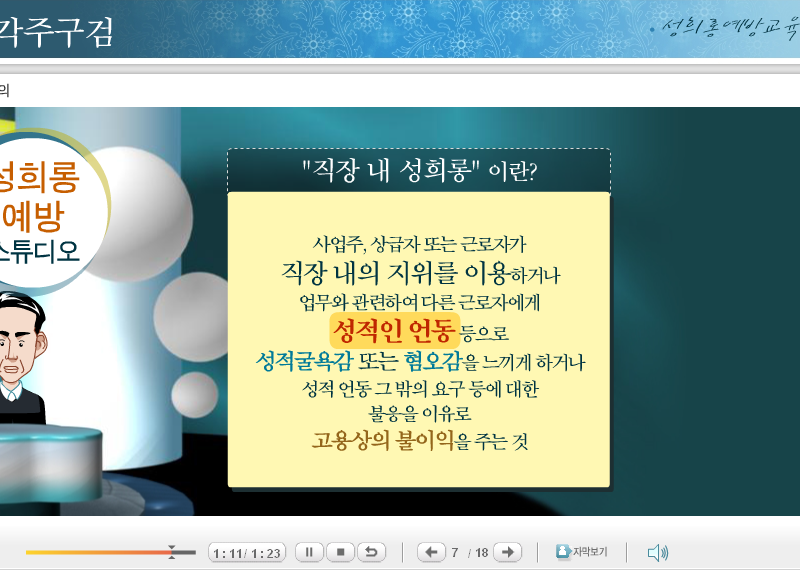

[직장내 성희롱 예방교육이 의무화 되었다]
남녀고용평등법에 의거 2007년도부터 직장내 성희롱 예방교육이 의무화 되었다.
이에 따라 사업주는 전문강사나 각종 온/오프라인 컨텐츠를 이용해 직원에게 성희롱 예방교육을 실시해야 한다.
... 오랜만에 민감한 주제를 언급하려니 가슴이 설렌다. (종교 해석 이후로 처음이다.)
여기서는 성희롱에 대해 말하지 않겠다.
그보다 더 큰. 직장내 성차별과 남녀평등에 대해 생각해보자.
--
오래전. 직장은 남자들의 세계였다.
이건 부정할 수 없는 사실이다.
필자도 남자인지라 남자들의 세계를 잘 안다.
남자들만 모아놓으면 그들만의 문화. 즉, 남성적인 문화가 형성되어 마치 군대같은 조직이 되어버린다.
직장이 군대의 복사판처럼 굴러가는 이유도 거기에 있다.
직장에서 여성은 신세계에 자신들의 영역을 내뻗은 개척자들이다.
사실 여성들이 신세계에 발을 들여 놓은것은 이미 수십여년 전 일이다. 하지만 초기의 소수 개척자들은 원주민들에게 포획되어 노예화 되고 말았다.
남성들 사이에서 살아남기 위해 스스로 남성화 되어 버린 것이다.
하지만 여성들의 유입이 많아지고 그들이 힘을 갖기 시작하자 원주민들은 동요하기 시작했고 일부는 개화되었다.
다수의 원주민들은 개척자들의 문화를 부분적으로나마 수용하기 시작했으나 자신들의 전통이 사라져가는 것에 대한 반감도 있었다.
원주민들이 갖고 있는 수직적 위계질서는 개척자들의 수평적 화합 문화를 수용하여 직급 없는 직장들을 만들어냈다.
군대 내무반 같이 칙칙하던 사무실에 인형이 쌓이고 꽃향기와 커피향이 돌기 시작했다.
개화는 직장내에 진출한 여성에게서만 기인하는 것이 아니었다.
나에겐 직장이지만 고객에게는 생활이다. 직장에 여성들이 많아진다는 것은 생활속에 여성들이 많아진다는 것을 뜻한다.
생산직, 서비스직 어느곳에서나 여성들을 만날 수 있게 되었다.
문화의 융합은 긍정적으로만 일어나지는 않았다.
개화는 급진적으로 일어났고 융화는 점진적으로 이루어졌다.
한손에는 총을. 한손에는 성경책을 들고 들어온 것이다.
수 많은 개척자와 원주민이 자신들의 문화를 더 우위에 두기 위해 개인적, 조직적으로 투쟁했다.
하지만 총과 활이 교차하지 않는 곳에서는 융화가 일어났다.
급진적인 개화론자가 없다면 점진적인 융화는 발붙이기 어려웠을 것이다.
점진적인 융화가 없다면 급진적인 개화는 반감을 사는데 그쳤을 것이다.
개화는 중반에 치닫고 있다.
이제 남성들만의 문화 지키며 살아간다는 것은 원주민 보호구역에 들어가길 자처하는 일과 같다.
그들의 문화가 영원히 하나로 합쳐지지는 않을 수도 있다.
하지만 같은 세계에서 살아가기 위해서는 생존을 위한 새로운 노력이 필요한 때다.
--
그 어떤 문화도 우월하지 않다.
유별할 뿐이다.
인정할 것인가. 고립될 것인가.